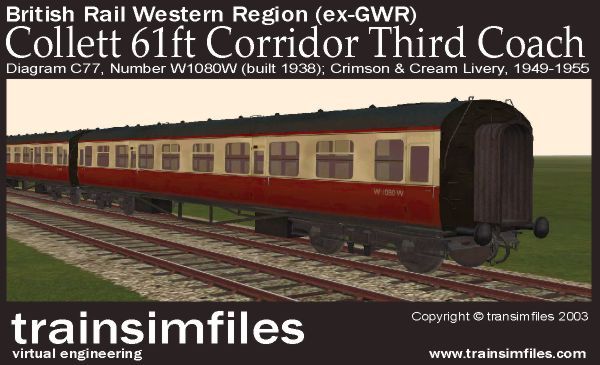

BR exGWR Collett 61ft Corridor Third Coach Diagram C77 No.W1080W

Details:
Company: British Rail (Western Region)
Style: Collett, Standard Mainline stock, Large-window
Type: Corridor Third
Format: 8x 6ft third class comparments, with lavatory at either end
Seating capacity: 48 (6 per compartment)
Length: 60ft 11¼in
Width: 8ft 11in
Weight: 31tons
Running number: W1080W
Diagram: C77
Built: 1938
Livery: BR Crimson & Cream, 1949-1955 (weathered)
This model features super-detailing including roof lavatory tank covers, handles and handrails, bogie detail, interior, and translucent glazing.
This model has multiple detail levels, for optimal frame rates.
Note: The coupling type is set to chain, and has vacuum braking - please ensure your stock is compatible.
This model does not feature a passenger view, but an alternative model of this diagram (with different running number) will be released later with one included.
Alternative liveries (later GWR, and various BR) will be made available soon.
Version information:
Version: 1.0
Released: 25th March 2003
Copyright
This model is for your personal use only, and
may not be sold or distributed in any way (including being uploaded to an internet site), without my permission.
Note: This model is not suitable for repainting into different diagrams.
Support
I am happy to help with any problems you may
have with this model, but I will not be able to assist with renumbering/repainting issues, or modifications.
Note: Whilst every care is taken with this installation, I cannot be held responsible for any consequences.
email: tim@trainsimfiles.com
web: http://www.trainsimfiles.com/